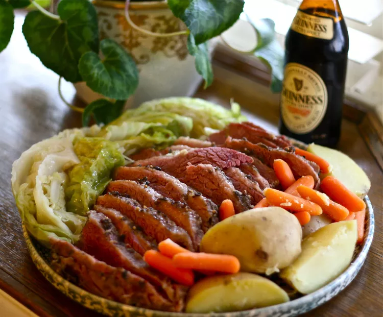

Corned Beef and Cabbage

What's more Irish than a traditional recipe for corned beef and cabbage? Serve with mustard or horseradish if desired.
Ingredients
- Corned Beef
- Red Potatoes
- Cabbage
- Carrots
- Broth
Instructions
- Boil the corned beef, then simmer until the meat is tender.
- Cut the red potatoes in half, cut the cabbage into wedges, and peel and cut the carrots.
- Add the potatoes and carrots to the Dutch oven and cook until tender.
- Add the cabbage and cook for about 15 more minutes.
- Remove the meat from the Dutch oven, let rest, and slice across the grain.
- Serve with vegetables and broth.